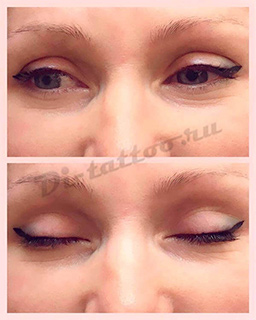
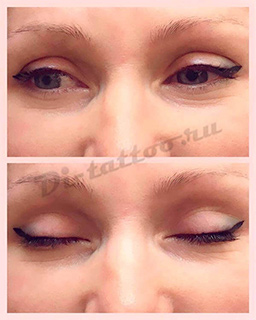

ПЕРМАНЕНТНЫЙ МАКИЯЖ
На сегодняшний день перманентный макияж стал довольно популярной процедурой. Каждая женщина мечтает иметь выразительные черты глаз, форму бровей и контур губ. Какие же преимущества у перманентного макияжа? Во-первых, с его помощью можно изменить форму, цвет и даже размер ваших губ, бровей и глаз. Избавиться от асимметрии, изменить контур и приблизить ваши черты лица к идеальному соотношению. Во-вторых, ваш макияж будет занимать у вас минимум времени, больше не будет необходимости прорисовывать стрелки и добиваться подходящей формы бровей и губ с помощью карандаша, перманентный макияж позволит вашему лицу иметь естественную привлекательность и великолепный вид в любое время суток. В-третьих, благодаря современным анестетикам эта процедура стала безболезненной, а состав пигментов, состоящих из растительных и минеральных компонентов, является безвредным для здоровья. Несомненное преимущество такого макияжа, в том, что он долговременен и остается на коже в среднем от 2 до 5 лет, в зависимости от участков кожи. Это позволит вам всегда прекрасно выглядеть и уверено себя чувствовать в любой ситуации!
Существуют несколько видов техники нанесения перманентного макияжа бровей для придания определенной формы, густоты и объема бровей, в зависимости от конкретного случая.
Растушевка или теневая техникаПигмент вводится в пробелы между волосками, тем самым зрительно увеличивает густоту и создает фон, брови при этом натурально и выразительно.
При теневом нанесении пигмента, техника позволяет затемнять бровь в нужных местах.
Техника напыления или пудровые бровиПигмент растушевывается на верхнем слое кожи. Брови смотрятся максимально естественно, а болевых ощущений при такой техники практически нет.
Акварельный методПигмент наносится бесконтурным способом. Заполняется лишь бровь, контур не прорисовывается. Это позволяет создать эффект своей натуральной брови.
Микроблейдинг или биотатуажПигмент вводится под кожу с использованием специального инструмента, машинка при этом не используется. Инструмент представляет собой лопаточку из тонких соединенных между собой игл. В процессе биотатужа осуществляется контроль оптимальной глубины введения, достигая естественного вида бровей.
ПроцедураПерманентный макияж бровей проводится в несколько этапов. Первоначально карандашом прорисовывается форма бровей в соответствии с пожеланиями клиента и с учетом особенностей лица. Далее подбирается цвет пигмента, подходящий к типу кожи, цвету глаз и волос. Эти этапы согласовываются с клиентом и только после этого начинаются процедуры нанесения макияжа, которые включают в себя: предварительную дезинфекцию рабочей зоны, анестезию при необходимости и непосредственный ввод пигмента.
Весь процесс длится около часа, в зависимости от сложности работы. После процедуры, брови обрабатываются заживляющей мазью. Для закрепления цвета и достижения идеального визуального эффекта необходимо сделать коррекцию в течении трех месяцев после первичной процедуры.
Как правило перманентный макияж бровей держится от 1 до 4 лет, в зависимости от индивидуальных особенностей организма, а также внешних факторов воздействия.
После окончания процедуры, клиенту будут даны все необходимые рекомендации, а также выдана памятка с правилами ухода для ускорения процесса заживления.
Процедура позволяет придать глазам еще большую выразительность и скорректировать форму. У вас всегда будет аккуратный и естественный макияж, который сэкономит ваше время на сборы и в любой ситуации будет выглядеть превосходно. Существует несколько видов техник нанесения:
Межресничная техникаПигмент вводится в межресничное пространство, тем самым создавая эффект густых ресниц. Этот способ самый простой, он не требует предварительной прорисовки контура и подходит практически всем женщинам с любым типом лица, поскольку выглядит абсолютно естественно.
Классическая стрелкаСтрелки наносятся сплошной четкой линией чуть выше линии роста ресниц, либо же с прорисовкой межресничного пространства для придания глубины взгляда. Ширина стрелки и вид хвостика стрелки подбирается в зависимости от внешности и пожеланий клиента.
Стрелка в технике растушевкаСтрелки в такой техники не имеют четких линий. Создается эффект подводки мягким карандашом или тенями с мягким переходом от яркого цвета до почти незаметного. При помощи такого способа можно изменить форму глаза, придать взгляду выразительности, а также визуально увеличить глаза.
Эффект тенейПигмент наносится методом теневой растушевки. Создаются мягкие цветовые переходы, похожие на макияж тенями. Этот способ подойдет тем, кто постоянно использует в своем макияжи тени.
ПроцедураПерманентный макияж век проводится в несколько этапов. Карандашом рисуется эскиз выбранной техники в соответствии с пожеланиями клиента и согласовывается цвет пигмента.
Далее проводится предварительная дезинфекция века, наносится местная гелевая анестезия и начинается непосредственный ввод пигмента.
Весь процесс длится около часа, в зависимости от сложности работы. После процедуры, веки обрабатываются заживляющей мазью. Для закрепления цвета и достижения идеального визуального эффекта необходимо сделать коррекцию в течении трех месяцев после первичной процедуры.
Как правило перманентный макияж век держится до 7 лет, в зависимости от индивидуальных особенностей организма, а также внешних факторов воздействия.
После окончания процедуры, клиенту будут даны все необходимые рекомендации, а также выдана памятка с правилами ухода для ускорения процесса заживления.
Перманентный макияж губ состоит во введении красящего пигмента на границу дермы и эпидермиса. Это позволяет визуально увеличить объем, выровнить контур, придать яркости или создать эффект накрашенных губ. Макияж делают в следующих техниках:
Контурная обводка губТехника напоминает использование обычного контурного карандаша, но на губах смотрится более мягко за счет подбора пигментов пастельных оттенков или полностью совпадающих с собственным цветом губ
Контурная обводка с растушевкойСпособ нанесения контура с растушевкой выглядит максимально естественно, поскольку более темная линия постепенно переходит в растушевку, которая полностью сливается с цветом губ.
Полная растушевкаПигментом заполняется вся поверхность, это позволяет создать эффект накрашенных помадой губ. Техника позволит увеличить объем губ и создать эффект легкого блеска.
Эффект объема 3DВ этой технике светлой линией наносится контур на участках кожи под и над губой с целью придания губам дополнительного объема и рельефности.
ПроцедураПерманентный макияж губ проводится в несколько этапов. Карандашом рисуется эскиз выбранной техники в соответствии с пожеланиями клиента и согласовывается цвет пигмента.
Далее проводится предварительная дезинфекция губ, наносится местная гелевая анестезия и начинается непосредственный ввод пигмента.
Весь процесс длится около часа, в зависимости от сложности работы. После процедуры, губы обрабатываются заживляющей мазью. Для закрепления цвета и достижения идеального визуального эффекта необходимо сделать коррекцию в течении трех месяцев после первичной процедуры.
Как правило перманентный макияж губ держится от 1 до 3 лет, в зависимости от индивидуальных особенностей организма, а также внешних факторов воздействия.
После окончания процедуры, клиенту будут даны все необходимые рекомендации, а также выдана памятка с правилами ухода для ускорения процесса заживления.
Процедура требует особой подготовки – антигерпесной профилактики. За сутки до проведения процедуры необходим прием антигерпесного препарата, таких как Ацикловир Зовиракс, Валтрекс и тд. в виде таблеток согласно инструкции.
 
